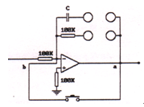

|
一、 仪器设备简介：
1、 计算机和A/D&D/A卡
计算机用于各个实验的管理及实验算法的实现。
A/D&D/A卡用于完成数字量和模拟量之间的相互转换，实验室所采用的是PC-6333多功能模入模出接口卡，本卡上的A/D、D/A转换均为12位，同时具备6路数字量输入和6路数字量输出，3路16位字长的计数器/定时器。
2、 电子模拟机
XMN-2型电子模拟机用来对控制系统实现电子模拟，通过在电子模拟机上搭接模拟电路的方法来实现各种典型环节和控制系统的传递函数。
电子模拟机以积分器和加法器为基础，分为九个单独的运算放大器模块，配置了二极管、电位计、分压器、电阻、电容等部件，每个运放模块都相互独立，如果各部件之间有黑线连接则说明是连通的，不再需要导线连接，相反则需要用导线进行连接使用。
模拟机右侧配有一个红色按钮，是电容放电（复位）按钮，每次开始实验采集数据前均要按下“复位”键，使每个积分器反馈回路中的电容通过按键的a、b接点放电，消除电容上的残余电荷，从而提高重复运算的精度，尽量消除零点和积分飘移对系统的影响，复位电路如图所示。

电子模拟机右侧有一个D型头接口和计算机内的A/D&D/A板进行连接通信，D型头下面有5个插孔，作为计算机接口和各运算放大器之间的连接使用。其中信号源1与系统的输入端（Ui）相连，采集输入1和系统的输出端（Uo）相连，信号源2和采集输入2不用。模拟机上
所有的共地点都已经连好，不再需要连接。在进行系统的
输入输出端和模拟机接口进行连接时，应特别小心，不要接错，在连接好了以后要请老师检查后再接通电源。
3、 实验导线
实验中所使用的导线，是一次压制成型的，导线插头采用自锁紧方式，插头插入后顺时针方向旋转一定角度即可锁紧，拔除时逆时针方向旋转后方可拔出，严禁拉着导线拔出，这样容易造成导线不易发现的损坏，给实验带来不必要的麻烦，同时造成财产的损失。
另外，不可以带电插拔导线。
|